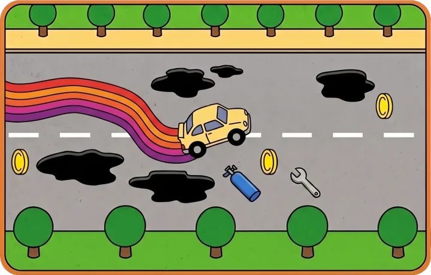
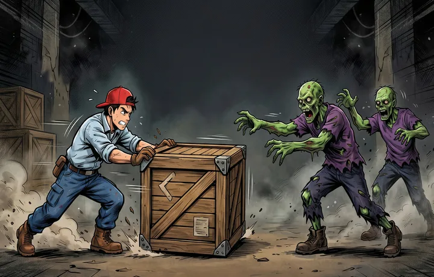
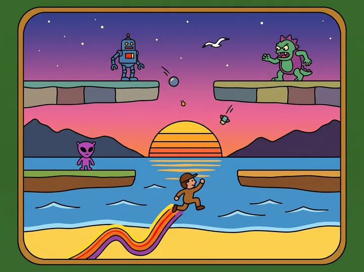

GAMESJUEGOS
POTHOLE RUSH

Commodore 64 · Commodore 128 · MEGA65 · ZX Spectrum Next
Dodge potholes, collect coins and jump over cones. For the Commodore 64, on disk and cartridge, and for the Commodore 128, the MEGA65 and the ZX Spectrum Next, with five landscapes. Free to download, also for Windows and Linux.
Esquiva baches, recoge monedas y salta conos. Para la Commodore 64, en disco y cartucho, y para la Commodore 128, la MEGA65 y la ZX Spectrum Next, con cinco paisajes. De descarga gratuita, también para Windows y Linux.
CREEPIN' CRATES

Commodore 128 · MEGA65 · ZX Spectrum Next
Push crates, squash zombies and line up the steel crates. For the Commodore 128 in 80 columns, and for the MEGA65 and the ZX Spectrum Next in full color. Free to download, also for Windows and Linux.
Empuja cajas, aplasta zombis y pon en fila las cajas de acero. Para la Commodore 128 en 80 columnas, y para la MEGA65 y la ZX Spectrum Next a todo color. De descarga gratuita, también para Windows y Linux.
JUMPING JIM

Commodore 64
Climb seven floors through sliding gaps and dodge eight kinds of baddies. Version 1.1.1 for PAL, NTSC and Drean, free to download.
Sube siete pisos por huecos que se deslizan y esquiva ocho clases de enemigos. Versión 1.1.1 para PAL, NTSC y Drean, de descarga gratuita.
NEWSNOVEDADES
-
Creepin' Crates now runs on a real MEGA65. Tayger tried it on his machine and it worked like a charm: joystick, keyboard and music, no issues at all. Thanks, Tayger! If you play it on yours, let us know how it goes.
Creepin' Crates ya anda en una MEGA65 real. Tayger lo probó en su máquina y anduvo de primera: el joystick, el teclado y la música, sin ningún problema. ¡Gracias, Tayger! Si lo juegas en la tuya, cuéntanos cómo te va.
-
Creepin' Crates, our new game, is here. Push crates, squash zombies and line up the steel crates to call down the lightning. For the Commodore 128 in 80 columns and for the MEGA65 in 256 colors, also for Windows and Linux with the emulator included. We haven't seen it run right on the real machines yet: if you have one, help us test it.
Llega Creepin' Crates, nuestro juego nuevo. Empuja cajas, aplasta zombis y pon en fila las cajas de acero para que caiga el rayo. Para la Commodore 128 en 80 columnas y para la MEGA65 en 256 colores, también para Windows y Linux con el emulador incluido. Todavía no lo vimos andar bien en las máquinas reales: si tienes una, ayúdanos a probarlo.
-
Pothole Rush comes to the Commodore 128. With five landscapes, an icy road in the snow and a car radio with eleven tracks. For PAL and NTSC machines, on disk.
Pothole Rush llega a la Commodore 128. Con cinco paisajes, la ruta que resbala en la nieve y la radio del auto con once temas. Para máquinas PAL y NTSC, en disco.
-
Pothole Rush comes to the ZX Spectrum Next. With five landscapes, an icy road in the snow, stereo sound on three AY chips with sampled drums, and a car radio with eleven tracks. For the 2 MB ZX Spectrum Next, and for Windows and Linux with the emulator included.
Pothole Rush llega a la ZX Spectrum Next. Con cinco paisajes, la ruta que resbala en la nieve, sonido en estéreo con tres chips AY y batería de muestras, y la radio del auto con once temas. Para la ZX Spectrum Next de 2 MB, y para Windows y Linux con el emulador incluido.
-
Pothole Rush 1.0.3 for MEGA65: now on the real machine. The new version runs on a real MEGA65, and brings a few fixes: the menus stay centered after a run, the ← key quits a run, the log only hits the wheels and coins fly the right way to the scoreboard. Thanks to Tayger and Deft, who tested it on their machines: they're now in the Hall of Fame.
Pothole Rush 1.0.3 para MEGA65: ahora en la máquina real. La nueva versión anda en una MEGA65 de verdad, y trae algunos arreglos: los menús centrados después de una partida, la tecla ← para abandonar, el tronco que choca solo con las ruedas y la moneda que vuela bien al marcador. Gracias a Tayger y Deft, que la probaron en sus máquinas: ya están en el salón de la fama.